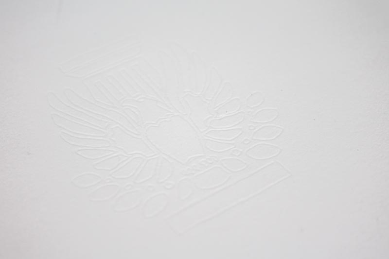
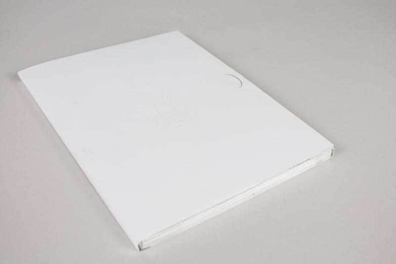
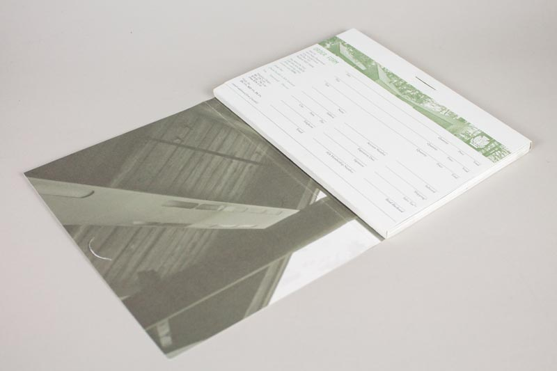
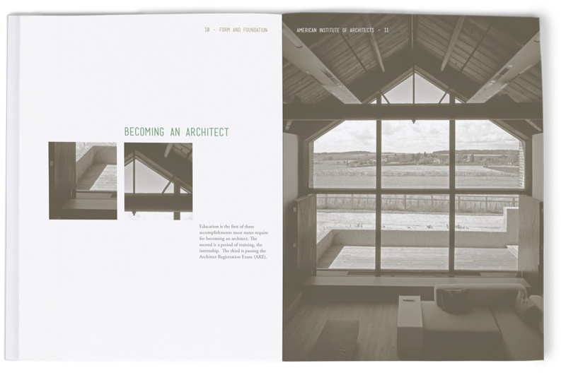
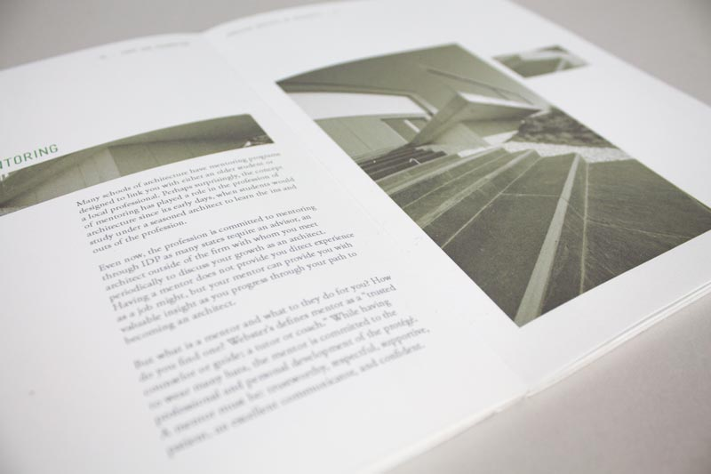
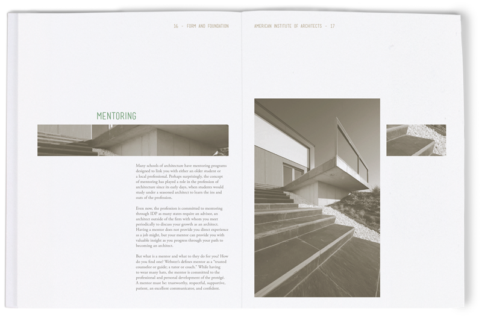
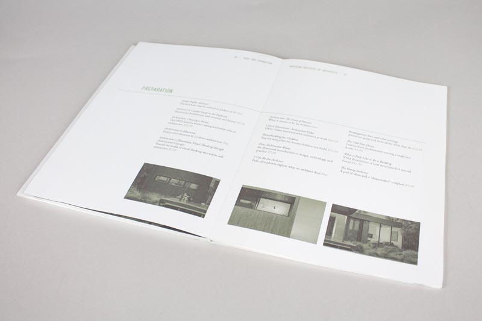

< Prev
Next >
Form and Foundation is a consumer information publication for the American Institute of Architects (AIA). The purpose of the publication is to make available information and resources for any student or adult interested in pursuing a career as an architect.
      Made with love and powered with ice cream.